Синхронизация с KDE Kontact
KOrganizer, Kalendar и KAddressBook могут синхронизировать ваш календарь, контакты и задачи с сервером Nextcloud.
Порядок действий зависит от того, чем вы пользуетесь: KOrganizer или Kalendar:
В KOrganizer:
Откройте KOrganizer, щёлкните правой кнопкой мыши в списке Календарь слева и выберите
Добавить календарь…:
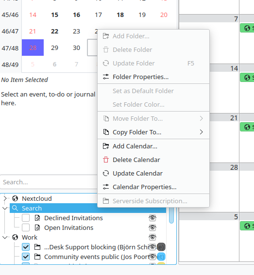
В полученном списке ресурсов выберите
Источник данных совместной работы DAV:
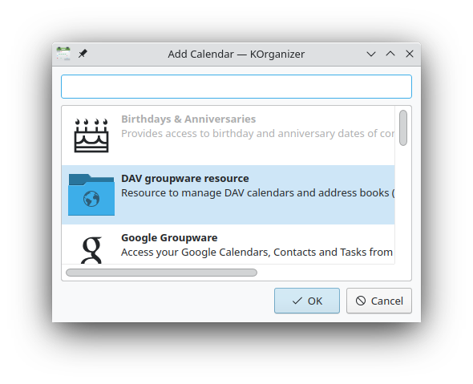
В Kalendar:
Откройте Kalendar, затем откройте «Параметры» и выберите
Источники данных календаря->Добавить источник данных календаря…:
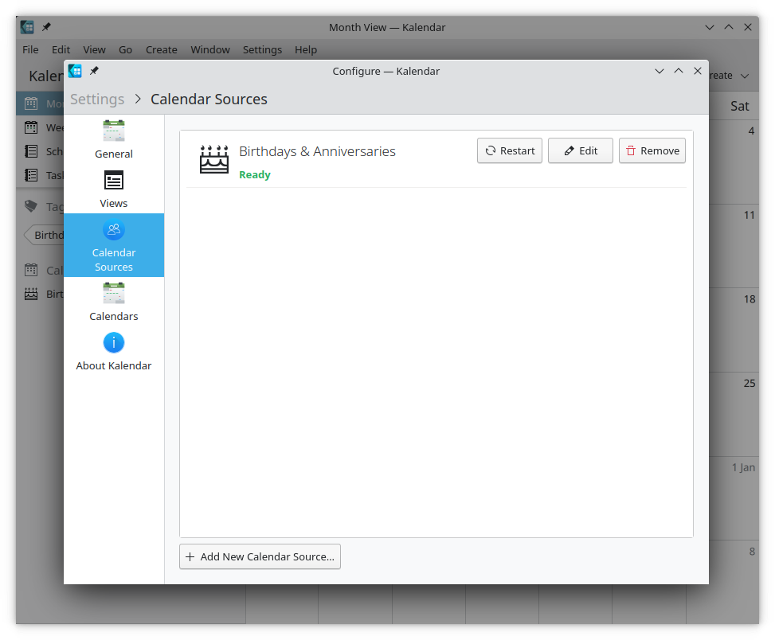
В полученном списке ресурсов выберите
Источник данных совместной работы DAV:
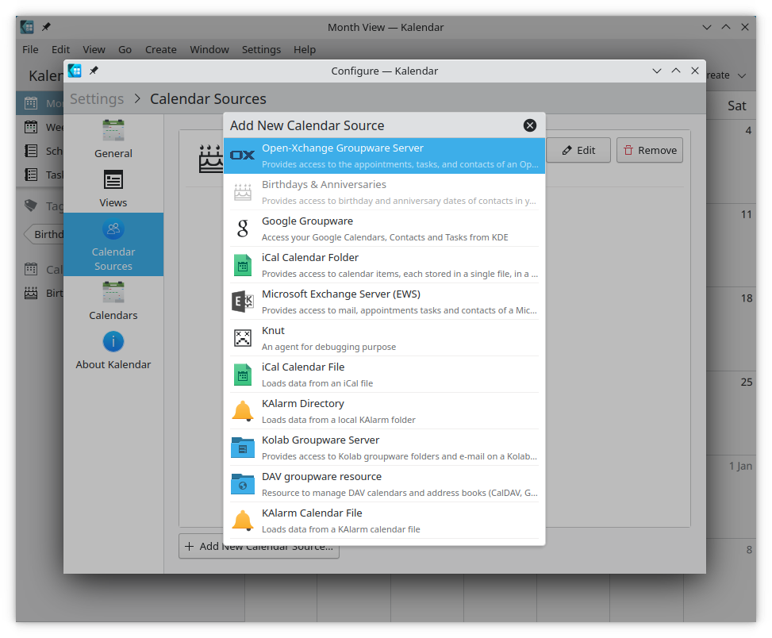
В KOrganizer и Kalendar:
Введите имя пользователя. В качестве пароля сгенерируйте пароль приложения (токен) (Подробнее):
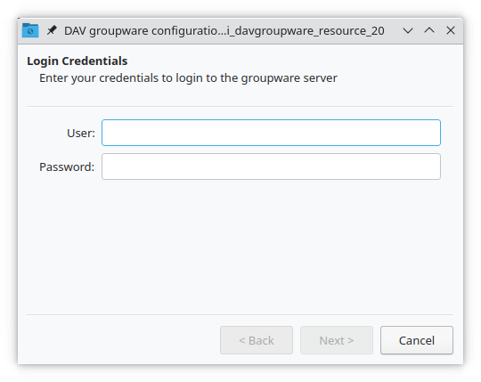
Выберите
Nextcloudв качестве сервера совместной работы:
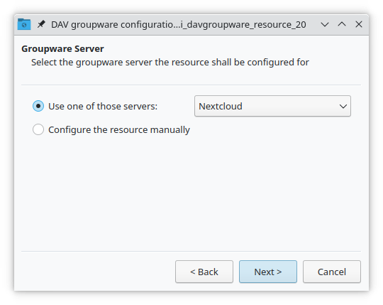
Введите URL сервера Nextcloud и, если нужно, путь установки (всё, что идёт после первого /, например
mynextcloudвhttps://example.com/mynextcloud). Затем нажмите «Далее»:
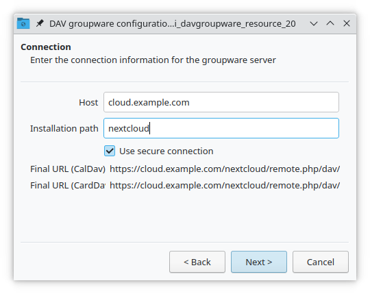
Теперь можно проверить соединение; при первом подключении это может занять некоторое время. Если соединение не работает, вернитесь назад и попробуйте исправить параметры:
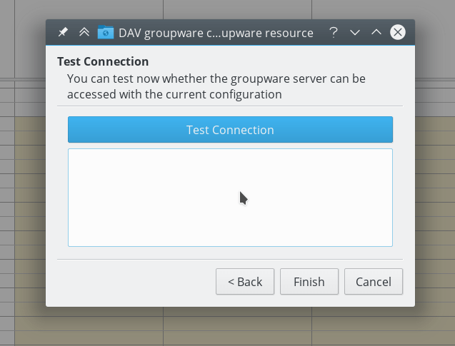
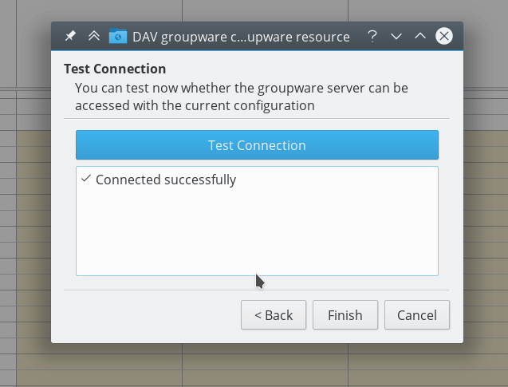
Выберите имя для этого ресурса, например
РаботаилиДом. По умолчанию синхронизируются и CalDAV (календарь), и CardDAV (контакты):
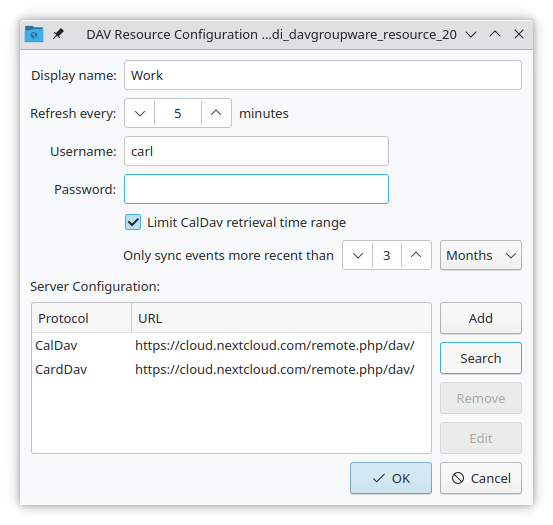
Примечание
Для ресурсов календаря и контактов можно задать частоту обновления вручную. По умолчанию она равна 5 минутам, и в большинстве случаев этого достаточно. Новое событие сразу синхронизируется с Nextcloud. Изменить частоту стоит для экономии заряда батареи или мобильного трафика: тогда обновлять данные можно щелчком правой кнопкой мыши по элементу в списке календарей.
Через несколько секунд или минут (в зависимости от скорости подключения к Интернету) ваши календари и контакты появятся в приложениях KDE Kontact — KOrganizer, Kalendar и KAddressBook, а также в апплете календаря Plasma:
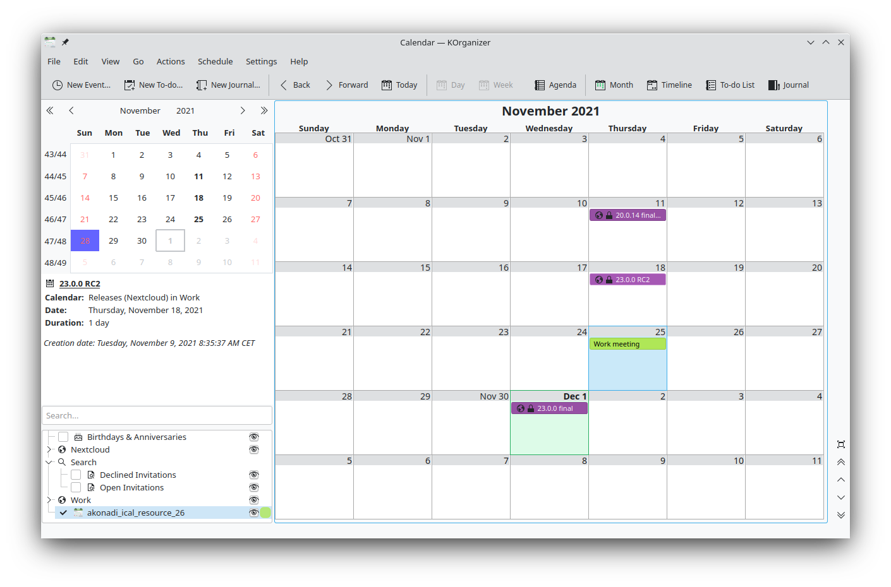
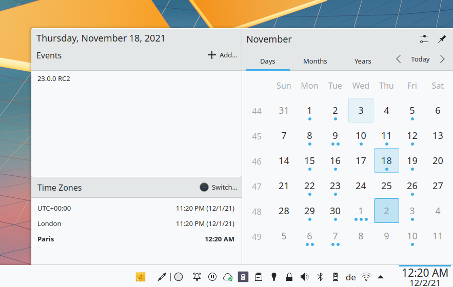
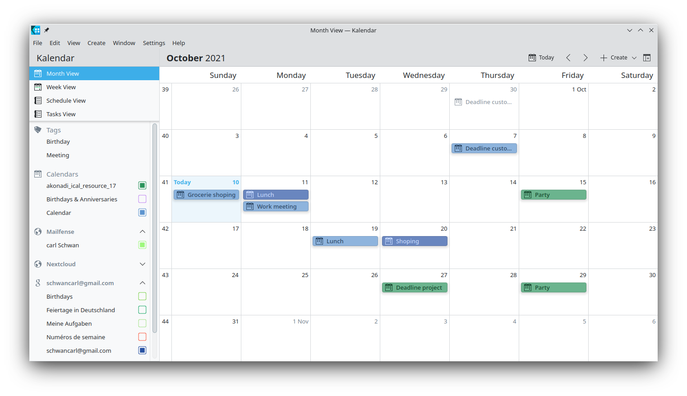
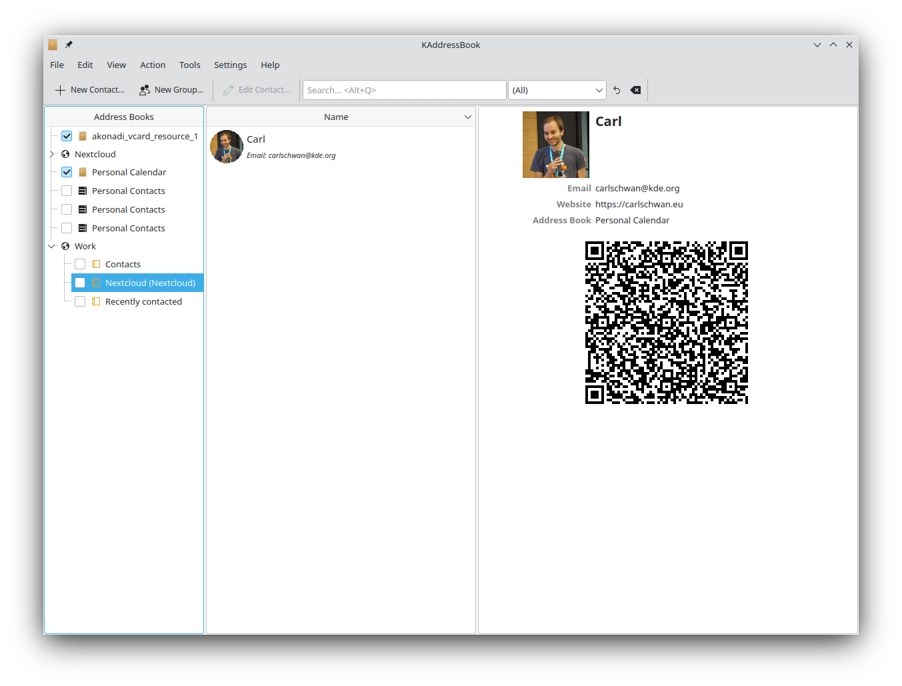